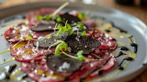
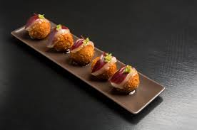
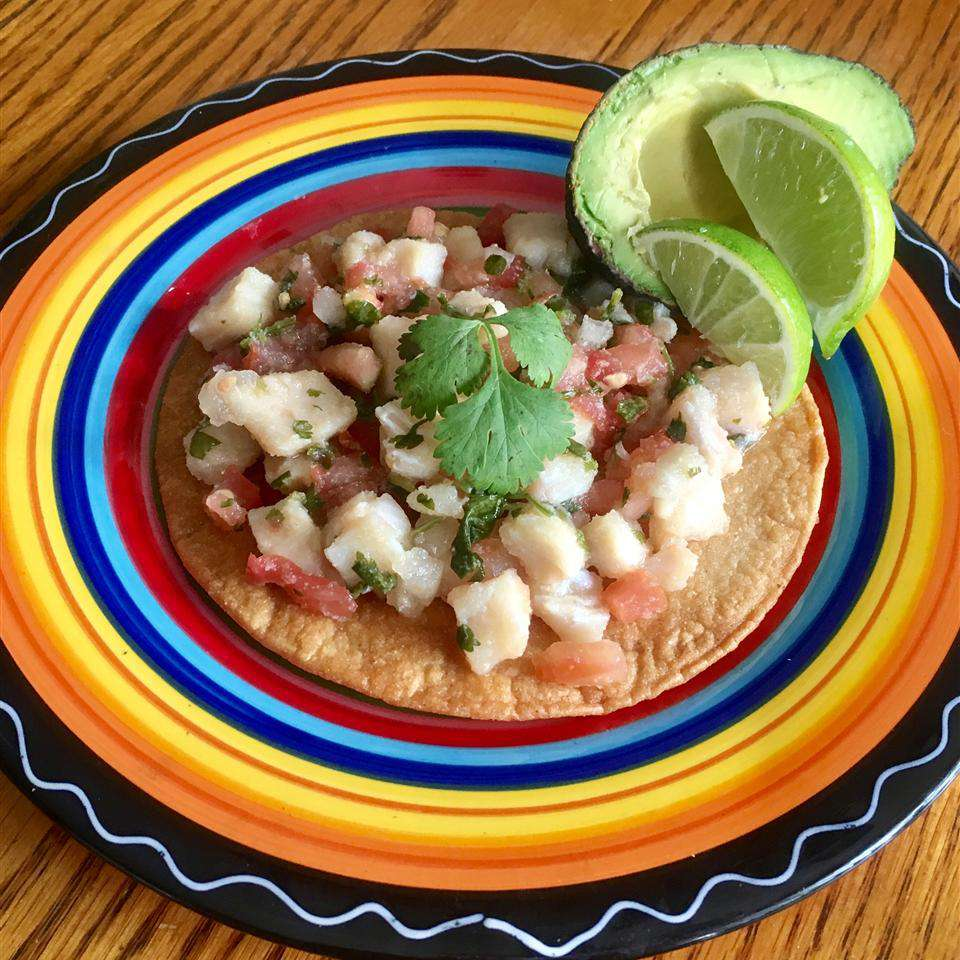
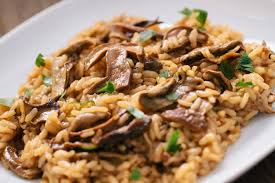
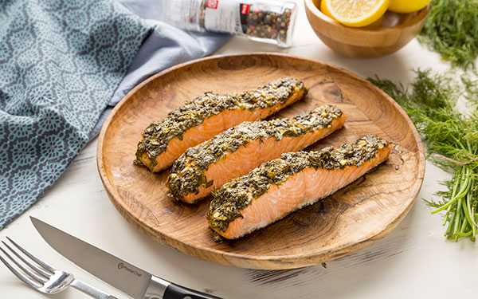
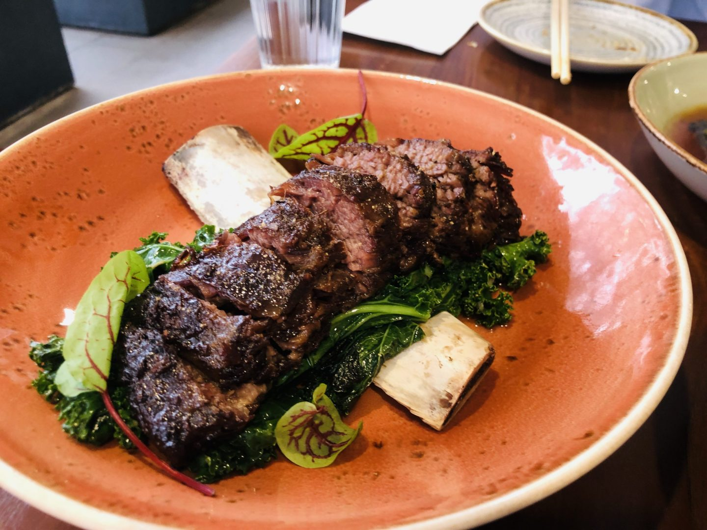
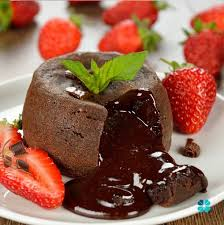

Entradas
Carpaccio de Res Trufado

Láminas muy finas de lomo de res premium, acompañadas de alcaparras,lascas de queso parmesano,
rúcula fresca y un toque de aceite de oliva con aroma a trufa negra.
Se sirve con pan tostado artesanal.
Precio:$14.00
Croquetas de Jamón Ibérico

Cuatro unidades de croquetas ultra cremosas por dentro y perfectamente crujientes por fuera,
hechas con una bechamel suave y trocitos de auténtico jamón ibérico. Acompañadas de alioli de ajo asado.
Precio: $10.50
Ceviche Citrus-Ginger

Cubos de pescado blanco del día marinados en una refrescante "leche de tigre" a base de lima,
un toque de jengibre y cilantro. Viene con camote dulce, cebolla morada y maíz tostado para el contraste crujiente.
Precio: $13.00
Platos Fuertes
Risotto de Hongos Silvestres

Arroz arborio cocinado lentamente con un caldo casero concentrado, una mezcla de hongos de temporada (portobello,
champiñón y setas), mantequilla de avellana y queso pecorino romano. Un plato reconfortante y cremoso.
Precio: $21.00
Salmón en Costra de Hierbas

Filete de salmón fresco con una costra crujiente de eneldo, perejil y panko (pan rallado japonés).
Se sirve sobre un puré de papa untuoso y una cama de espárragos salteados al sartén.
Precio: $24.50
Costilla de Res en Cocción Lenta (Short Rib)

Costilla de res braseada durante 12 horas en una reducción de vino tinto y especias,
logrando que la carne se desmorone con el tenedor. Acompañada de vegetales de raíz glaseados.
Precio: $28.00
Postres
Cheesecake de Frutos Rojos y Cardamomo

Tarta de queso estilo Nueva York con una base crujiente de galleta de mantequilla,
cubierta con una compota casera de fresas, frambuesas y un sutil toque aromático de cardamomo.
Precio: $7.50
Volcán de Chocolate Amargo

El clásico bizcocho de chocolate con el centro líquido y caliente.
Hecho con chocolate al 70% de cacao y acompañado de una bola de helado artesanal
de vainilla de Papantla para jugar con las temperaturas.
Precio: $8.50